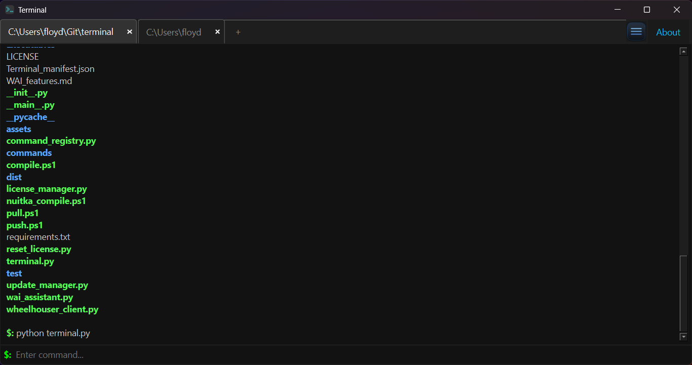
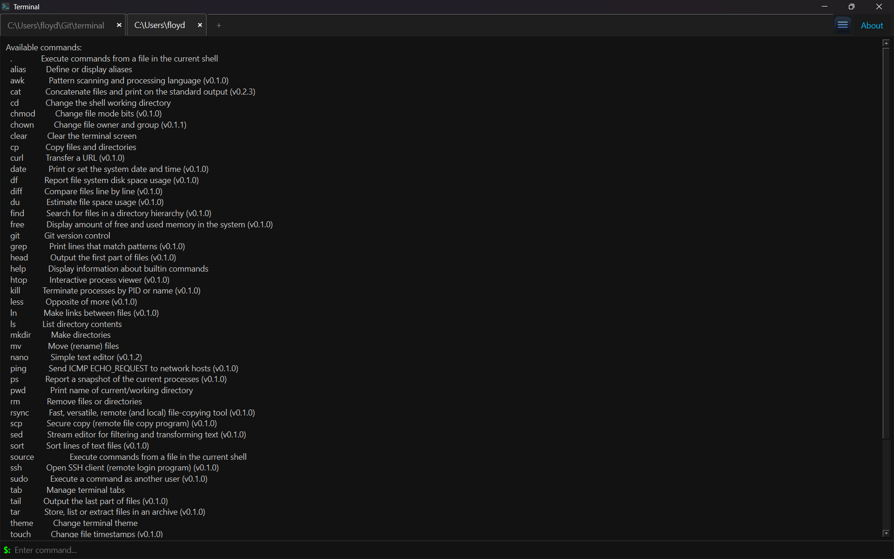
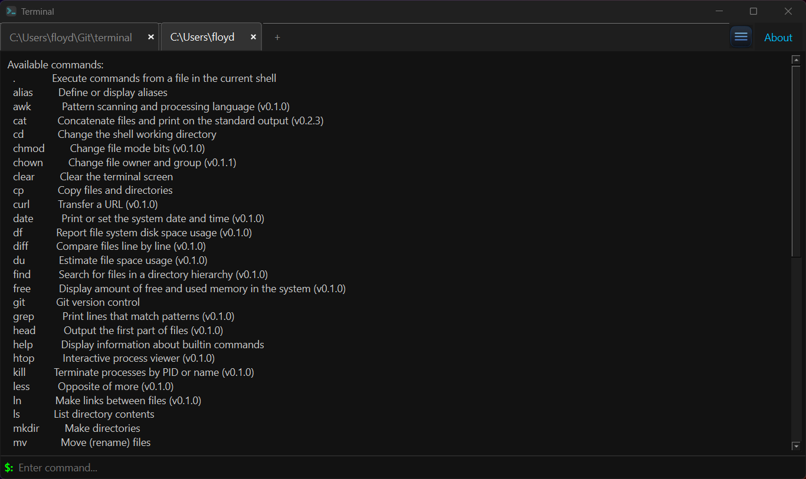
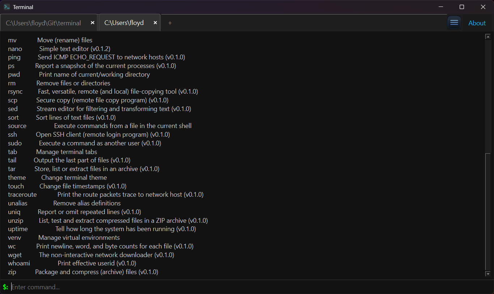

Wheelhouser Terminal
Hardware-accelerated cross-platform terminal emulator with built-in SSH, native POSIX utilities on Windows, and local AI command assistance.




Scroll horizontally for more views →
About the Application
Wheelhouser Terminal is a fast, modern, hardware-accelerated desktop terminal emulator and unified command shell engineered by Wheelhouser LLC for developers, system administrators, and power users across Windows 11, Linux, and macOS.
Eliminating the command syntax friction between operating systems, Wheelhouser Terminal pairs native system shell execution with a comprehensive built-in suite of Unix/POSIX utilities directly on Windows—including ssh, scp, rsync, grep, sed, awk, curl, wget, tar, and nano—without requiring WSL or heavy virtual machines.
Key Features
- Unified Cross-Platform Shell Experience: Run familiar POSIX commands seamlessly across Windows, Linux, and macOS with zero context switching.
- Multi-Tab Workspaces & Session Persistence: Manage concurrent shell sessions with live working-directory tab headers and automatic geometry/session restoration.
- Built-In SSH Client & Fleet Sync: Interactive remote shell administration plus integrated
scp,rsync,ping, andtraceroutenetwork tooling. - 24-Bit TrueColor & Custom Themes: Hardware-accelerated buffer rendering with full ANSI escape sequencing, monospace font auto-detection, and cohesive Wheelhouser Dark styling.
- Local WAI Assistant (100% Private): Optional context-aware local AI command orchestration that translates natural language into shell one-liners without external keystroke logging or telemetry.
Downloads & Installation
Windows 10 & 11
macOS (Apple Silicon & Intel)
Debian 13 (Trixie)
Install GPG keyring, repository source, and package:
sudo install -m 0755 -d /etc/apt/keyrings && \
curl -fsSL https://repo.wheelhouser.com/steve-rock-wheelhouser-gpg.key | sudo gpg --dearmor --yes -o /etc/apt/keyrings/wheelhouser.gpg && \
sudo chmod a+r /etc/apt/keyrings/wheelhouser.gpg && \
echo "deb [signed-by=/etc/apt/keyrings/wheelhouser.gpg] https://repo.wheelhouser.com/debian/13 ./" | sudo tee /etc/apt/sources.list.d/wheelhouser.list && \
sudo apt update && sudo apt install -y terminalUbuntu 26.04 LTS (Resolute)
Install GPG keyring, repository source, and package:
sudo install -m 0755 -d /etc/apt/keyrings && \
curl -fsSL https://repo.wheelhouser.com/steve-rock-wheelhouser-gpg.key | sudo gpg --dearmor --yes -o /etc/apt/keyrings/wheelhouser.gpg && \
sudo chmod a+r /etc/apt/keyrings/wheelhouser.gpg && \
echo "deb [signed-by=/etc/apt/keyrings/wheelhouser.gpg] https://repo.wheelhouser.com/ubuntu/26.04 ./" | sudo tee /etc/apt/sources.list.d/wheelhouser.list && \
sudo apt update && sudo apt install -y terminalWheelhouser Package Repository